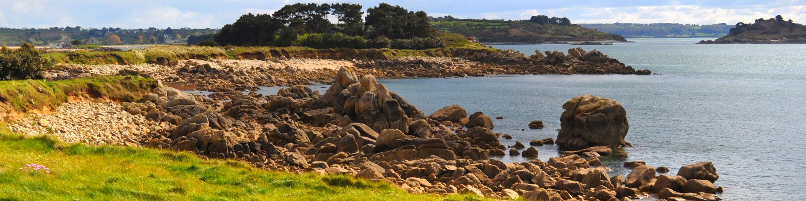
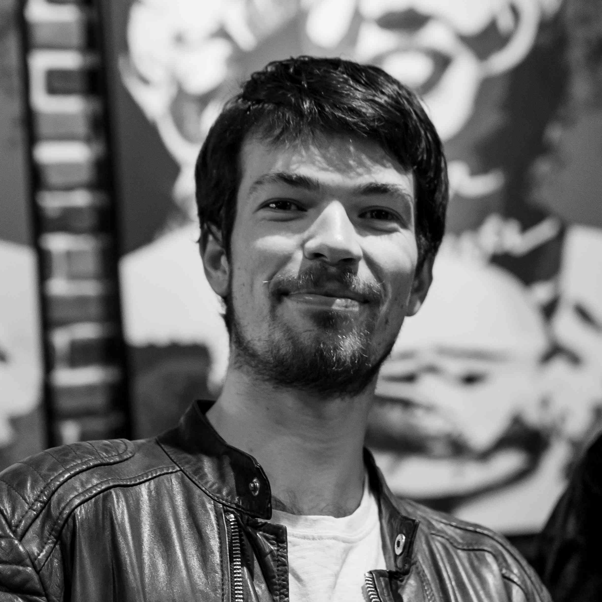

PhD Student in Applied Mathematics
Inria Center at Université Côte d'Azur
Affiliations
Université Côte d'Azur
CNRS — LJAD
INRIA — McTAO
Research Interests
Modelling, Optimal Control, Numerical Simulation, Renewable Energy
Skills
Programming: Julia (Expert), Python, Matlab, R, SQL
Mathematics: Optimal Control, Numerical Analysis, Optimization, Symbolic Computing
Tools: Git, Docker, Linux, LaTeX
Languages: French (Native), English (C2 - 990 TOEIC)
Work Experience
| 2023 – Present |
PhD Student | Inria & Université Côte d'AzurModelling, optimal control, and numerical simulation of an airborne wind energy system (coupled kite and oscillating arm). Implemented a point-mass model in Julia and optimized parameters to maximize electrical power extraction. Included a 1-month mobility at Syscop (Freiburg, Germany) to integrate the system into the Python toolbox AWEbox. |
| 2023 |
Research Engineer (6 months) | InriaPreparation of the PhD project. |
| 2021 – 2022 |
R&D Engineer (Apprenticeship, 1 year) | Thales Alenia SpaceImplemented a multi-frame super-resolution algorithm for satellite imagery. Achieved 100x speedup compared to machine learning baselines with similar visual quality. |
| 2021 |
Data Engineer Intern (3 months) | Banque Centrale du LuxembourgAutomated data extraction from financial PDFs (Python, Docker, Flask). Reduced processing time from 3 hours to 15 minutes per document. |
Publications
- Antonin Bavoil, Jean-Baptiste Caillau, Lamberto Dell'Elce, Alain Nême. Airborne wind energy: the KEEP project. 2025. Accepted at ECC 2026. ⟨hal-05366391⟩
- Antonin Bavoil. Technical report of the KEEP project. Université Côte d'Azur. 2024. ⟨hal-04513387⟩
Education
| 2019 – 2022 |
Polytech Nice SophiaEngineering Diploma in Applied Mathematics and Modelling. Specialization in Numerical Engineering: PDEs, optimal control, scientific machine learning, parallel computing. |
| 2022 |
Université Côte d'AzurMaster in Mathematical Engineering. Ranked 4/53. |
| 2017 – 2019 |
Polytech MarseillePrépa intégrée: Mathematics, physics, chemistry, and computer science. Ranked 4/1618. |
Teaching
| 2023 – Present |
Teaching Assistant | Polytech Nice Sophia180 hours total across three engineering courses:
|
Conferences
| Jul. 2026 | European Control Conference (ECC 2026) | Reykjavik, Iceland |
| Jun. 2026 | Airborne Wind Energy Conference (AWEC 2026) | Porto, Portugal |
| Mar. 2026 | Société de Mathématiques Appliquées et Industrielles - Mathématiques de l’Optimisation et de la DÉcision (SMAI-MODE 2026) | Nice, France |
| Nov. 2025 | PGMODays 2025 | Palaiseau, France |
| Oct. 2025 | Wind Energy Science Conference (WESC 2025) | Nantes, France |
| Jun. 2025 | Journée Contrôle Optimal et Applications | Avignon, France |
| Jun. 2025 | Société de Mathématiques Appliquées et Industrielles (SMAI 2026) | Carcans, France |
| Feb. 2025 | School on numerical methods for optimal control of non-smooth systems | Paris, France |
| Oct. 2024 | Julia and Optimization Days | Toulouse, France |
| Jun. 2024 | French-German-Spanish Convention on Optimization (FGS 2024) | Gijón, Spain |
| Jun. 2024 | Journée Contrôle Optimal et Applications | Marseille, France |
| Mar. 2024 | Société de Mathématiques Appliquées et Industrielles - Mathématiques de l’Optimisation et de la DÉcision (SMAI-MODE 2024) | Lyon, France |
| Feb. 2024 | Complex Days 2024 | Nice, France |
| Oct. 2023 | Journées du GdR Mathématiques de l’Optimisation et Applications | Perpignan, France |
Projects & Activities
- Open Source: Added the KEEP system to AWEbox; wrote a Symbolic Lagrangian Mechanics tutorial in Julia.
- Academic Community: Co-organizer of the LJAD PhD Student Colloquium (2026).
- Academic Projects: Wildfire PDE simulation with Pareto optimization, spectral clustering implementation, and Neural ODEs with PyTorch.